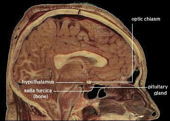

The “obesogenic” environment in America is a societal hurdle that must be overcome to halt the climbing obesity rate of this country.
The Obesity Epidemic
This video from the Centers for Disease Control and Prevention provides an overview of the burden of the obesity epidemic in the United States and its contributing causes.
“Obesogenic” is a word that has sprung up in the language of public health professionals in the last two decades. The Centers for Disease Control and Prevention (CDC) defines obesogenic as “an environment that promotes increased food intake, nonhealthful foods, and physical inactivity.” The CDC reports that in 2009 in the United States, 33 percent of adults and 16 percent of children were obese, a doubling and tripling of the numbers since 1980, respectively, while in Canada the obesity rate was 24.1 percent for 2007–2009. The health consequences of too much body fat are numerous, including increased risks for cardiovascular disease, Type 2 diabetes, and some cancers. The medical costs related to obesity are well over one hundred billion dollars and on the individual level, people who are obese spend $1,429 more per year for medical care than people of healthy weight.
Numerous obesogenic agents that contribute to this immense public health problem have become a part of everyday life in American society. The fast food industry has been growing for decades and continues to grow despite the latest economic slump. In America today there are over twelve thousand McDonald’s restaurants, while in 1960 there was one. Food portions have been getting bigger since the 1960s, and in the 1990s North American society experienced the “super-size” marketing boon, which still endures. Between 1960 and 2000 more than 123 million vehicles were added to the American society. Escalators, elevators, and horizontal walkways now dominate shopping malls and office buildings, factory work has become increasingly mechanized and robotized, the typical American watches more than four hours of television daily, and in many work places the only tools required to conduct work are a chair and a computer. The list of all the societal obesogenic factors goes on and on. They are the result of modernization, industrialization, and urbanization continuing on without individuals, public health officials, or government adequately addressing the concurrent rise in overweight and obesity.
With obesity at epidemic proportions in America it is paramount that policies be implemented or reinforced at all levels of society including education, agriculture, industry, urban planning, health care, and government. Reversing and stopping obesity are two different things. The former will require much more societal change and change on the individual level than the latter. The following are some ideas for constructing an environment in America that promotes health and confronts the obesity epidemic:
Individual Level
Community Level
National Level
Visit the CDC website to see an animated map that shows the growing prevalence of obesity in the United States from 1985 to 2010.
Some scientists predict that the childhood obesity rate will reach 100 percent by 2044. It is critical for the nation’s health to change our environment to one that promotes weight loss and/or weight maintenance. However, action is needed on multiple fronts to reverse the obesity epidemic trend within one generation.
How can you assist in the American transition from an obesogenic environment to a healthier environment at the individual, community, and national levels?
In this chapter you will learn how to assess body weight and fatness. You will also learn that it is not only society and environment that play a role in body weight and fatness, but also physiology, genetics, and behavior—and that all of them interact. We will also discuss the health risks of being underweight and overweight, learn evidence-based solutions to maintain body weight at the individual level, and assess the current state of affairs of combating the obesity epidemic in the United States.
“Thou seest I have more flesh than another man, and therefore more frailty.”
William Shakespeare (1564–1616)
Although the terms overweight and obese are often used interchangeably and considered as gradations of the same thing, they denote different things. The major physical factors contributing to body weight are water weight, lean tissue mass, bone tissue mass, and fat tissue mass. OverweightHaving more weight than normal for a particular height (BMI between 25 and 29.9). refers to having more weight than normal for a particular height and may be the result of water weight, muscle weight, or fat mass. ObeseHaving excess body fat (BMI greater than 30). refers specifically to having excess body fat. In most cases people who are overweight also have excessive body fat and therefore body weight is an indicator of obesity in much of the population.
The “ideal” healthy body weight for a particular person is dependent on many things, such as frame size, sex, muscle mass, bone density, age, and height. The perception of the “ideal” body weight is additionally dependent on cultural factors and the mainstream societal advertisement of beauty.
To standardize the “ideal” body weight and relate it to health, scientists have devised mathematical formulas to better define a healthy weight. These mathematically derived measurements are used by health professionals to correlate disease risk with populations of people and at the individual level. A clinician will take two measurements, one of weight and one of fat mass, in order to diagnose obesity. Some measurements of weight and body fat that do not require using technical equipment can easily be calculated and help provide an individual with information on weight, fat mass, and distribution, and their relative risk of some chronic diseases.
Body mass index (BMI)A measurement that associates height and weight, and is a more comprehensive measurement of body fatness than weight alone. is calculated using height and weight measurements and is more predictive of body fatness than weight alone. BMI measurements are used to indicate whether an individual may be underweight (with a BMI less than 18.5), overweight (with a BMI over 25), or obese (with a BMI over 30). High BMI measurements can be warning signs of health hazards ahead, such as cardiovascular disease, Type 2 diabetes, and other chronic diseases. BMI-associated health risks vary by race. Asians face greater health risks for the same BMI than Caucasians, and Caucasians face greater health risks for the same BMI than African Americans.
To calculate your BMI, multiply your weight in pounds by 703 (conversion factor for converting to metric units) and then divide the product by your height in inches, squared. Alternatively, see Note 11.9 "Interactive 11.2" for web-based calculators that provide a BMI in seconds.
BMI = [weight (lb) x 703] ÷ height (in)2 or BMI = [weight (kg)] ÷ height (m)2The National Heart, Lung, and Blood Institute and the CDC have automatic BMI calculators on their websites:
http://www.nhlbisupport.com/bmi/
http://www.cdc.gov/healthyweight/assessing/bmi/adult_bmi/english_bmi_calculator/bmi_calculator.html
To see how your BMI indicates the weight category you are in, see Table 11.1 "BMI Categories" or use a chart of weight and height to figure out your BMI.
Table 11.1 BMI Categories
| Categories | BMI |
|---|---|
| Underweight | < 18.5 |
| Normal weight | 18.5–24.9 |
| Overweight | 25–29.9 |
| Obese | > 30.0 |
Source: National Heart, Lung, and Blood Institute. Accessed November 4, 2012. http://www.nhlbi.nih.gov.
A BMI is a fairly simple measurement and does not take into account fat mass or fat distribution in the body, both of which are additional predictors of disease risk. Body fat weighs less than muscle mass. Therefore, BMI can sometimes underestimate the amount of body fat in overweight or obese people and overestimate it in more muscular people. For instance, a muscular athlete will have more muscle mass (which is heavier than fat mass) than a couch potato of the same height. Based on their BMIs the muscular athlete would be less “ideal” and may be categorized as more overweight or obese than the couch potato; however this is an infrequent problem with BMI calculation. Additionally, an older person with osteoporosis (decreased bone mass) will have a lower BMI than an older person of the same height without osteoporosis, even though the person with osteoporosis may have more fat mass. A BMI is a useful inexpensive tool to categorize people and is highly correlative with disease risk, but other measurements are needed to diagnose obesity and more accurately assess disease risk.
Next we’ll discuss how to measure body fat, and why distribution of body fat is also important to consider when determining health.
Water, organs, bone tissue, fat, and muscle tissue make up a person’s weight. Having more fat mass may be indicative of disease risk, but fat mass also varies with sex, age, and physical activity level. Females have more fat mass, which is needed for reproduction and, in part, is a consequence of different levels of hormones. The optimal fat content of a female is between 20 and 30 percent of her total weight and for a male is between 12 and 20 percent. Fat mass can be measured in a variety of ways. The simplest and lowest-cost way is the skin-fold test. A health professional uses a caliper to measure the thickness of skin on the back, arm, and other parts of the body and compares it to standards to assess body fatness. It is a noninvasive and fairly accurate method of measuring fat mass, but similar to BMI, is compared to standards of mostly young to middle-aged adults. Other methods of measuring fat mass are more expensive and more technically challenging. They include:
Total body-fat mass is one predictor of health; another is how the fat is distributed in the body. You may have heard that fat on the hips is better than fat in the belly—this is true. Fat can be found in different areas in the body and it does not all act the same, meaning it differs physiologically based on location. Fat deposited in the abdominal cavity is called visceral fatFat deposited in the abdominal cavity. and it is a better predictor of disease risk than total fat mass. Visceral fat releases hormones and inflammatory factors that contribute to disease risk. The only tool required for measuring visceral fat is a measuring tape. The measurement (of waist circumference) is taken just above the belly button. Men with a waist circumference greater than 40 inches and women with a waist circumference greater than 35 inches are predicted to face greater health risks.
The waist-to-hip ratioWaist circumference divided by hip circumference. is often considered a better measurement than waist circumference alone in predicting disease risk. To calculate your waist-to-hip ratio, use a measuring tape to measure your waist circumference and then measure your hip circumference at its widest part. Next, divide the waist circumference by the hip circumference to arrive at the waist-to-hip ratio. Observational studies have demonstrated that people with “apple-shaped” bodies, (who carry more weight around the waist) have greater risks for chronic disease than those with “pear-shaped” bodies, (who carry more weight around the hips). A study published in the November 2005 issue of Lancet with more than twenty-seven thousand participants from fifty-two countries concluded that the waist-to-hip ratio is highly correlated with heart attack risk worldwide and is a better predictor of heart attacks than BMI.Yusuf, S. et al. “Obesity and the Risk of Myocardial Infarction in 27,000 Participants from 52 Countries: A Case-Control Study.” Lancet 366, no. 9497 (2005): 1640–9. Accessed October 5, 2011. http://www.ncbi.nlm.nih.gov/pubmed/16271645 ?dopt=AbstractPlus. Abdominal obesity is defined by the World Health Organization (WHO) as having a waist-to-hip ratio above 0.90 for males and above 0.85 for females.
Recall that the macronutrients you consume are either converted to energy, stored, or used to synthesize macromolecules. A nutrient’s metabolic path is dependent upon energy balanceWhen energy intake is equal to energy expended.. When you are in a positive energy balance the excess nutrient energy will be stored or used to grow (e.g., during childhood, pregnancy, and wound healing). When you are in negative energy balance you aren’t taking in enough energy to meet your needs, so your body will need to use its stores to provide energy. Energy balance is achieved when intake of energy is equal to energy expended. Weight can be thought of as a whole body estimate of energy balance; body weight is maintained when the body is in energy balance, lost when it is in negative energy balance, and gained when it is in positive energy balance. In general, weight is a good predictor of energy balance, but many other factors play a role in energy intake and energy expenditure. Some of these factors are under your control and others are not. Let us begin with the basics on how to estimate energy intake, energy requirement, and energy output. Then we will consider the other factors that play a role in maintaining energy balance and hence, body weight.
To maintain body weight you have to balance the calories obtained from food and beverages with the calories expended every day. Here, we will discuss how to calculate your energy needs in kilocalories per day so that you can determine whether your caloric intake falls short, meets, or exceeds your energy needs. The Institute of Medicine has devised a formula for calculating your Estimated Energy Requirement (EER)Energy intake values that have been established to preserve energy balance in healthy adults of a specific age, gender, weight, and height, and category of physical activity concurrent with good health.. It takes into account your age, sex, weight, height, and physical activity level (PA). The EER is a standardized mathematical prediction of a person’s daily energy needs in kilocalories per day required to maintain weight. It is calculated via the following formulas:
Adult male: EER = 662 − [9.53 x age (y)] + PA X [15.91 x wt (kg) + 5.39.6 x ht (m)] Adult female: EER = 354 − [6.91 x age (y)] + PA x [9.36 x wt (kg) + 726 x ht (m)] Note: to convert pounds to kilograms, divide weight in pounds by 2.2. To convert feet to meters, divide height in feet by 3.3.In Chapter 3 "Nutrition and the Human Body" you learned how to calculate the number of calories in food. To determine your caloric intake per day requires that you conduct a dietary assessment and record the number of calories you eat. To help you accomplish this task see Note 11.17 "Interactive 11.3".
To begin your dietary assessment, go to MyPlate, which is available on the US Department of Agriculture (USDA) website:
Table 11.2 Physical Activity (PA) Categories and Values
| Activity Level | Men PA Value | Women PA Value | Description |
|---|---|---|---|
| Sedentary | 1.00 | 1.00 | No physical activity beyond that required for independent living |
| Low | 1.11 | 1.12 | Equivalent to walking 1.5 to 3 miles per day |
| Moderate | 1.25 | 1.27 | Equivalent to walking 3 to 10 miles per day |
| High | 1.48 | 1.45 | Equivalent to walking 10 or more miles per day |
| These values only apply to normal weight adults and not to children or pregnant or lactating women. | |||
Source: Health Canada. “Dietary Reference Intake Tables.” Last modified November 29, 2010. http://www.hc-sc.gc.ca/fn-an/nutrition/reference/table/index-eng.php#eeer.
The numbers within the equations for the EER were derived from measurements taken from a group of people of the same sex and age with similar body size and physical activity level. These standardized formulas are then applied to individuals whose measurements have not been taken, but who have similar characteristics in order to estimate their energy requirements. Thus, a person’s EER is, as the name suggests, an estimate for an average person of similar characteristics. EER values are different for children, pregnant or lactating women, and for overweight and obese people. Also, remember the EER is calculated based on weight maintenance, not for weight loss or weight gain.
The 2010 Dietary Guidelines provides a table (Table 11.3 "Estimated Daily Calorie Needs") that gives the estimated daily calorie needs for different age groups of males and females with various activity levels. The 2010 Dietary Guidelines also states that while knowing the number of calories you need each day is useful, it is also pertinent to obtain your calories from nutrient-dense foods and consume the various macronutrients in their Acceptable Macronutrient Distribution Ranges (AMDRs) (Table 11.4 "Acceptable Macronutrient Distribution Ranges").
Table 11.3 Estimated Daily Calorie Needs
| Sex | Age (years) | Sedentary | Moderately Active | Active |
|---|---|---|---|---|
| Child (female and male) | 2–3 | 1,000–1,200 | 1,000–1,400 | 1,000–1,400 |
| Female | 4–8 | 1,200–1,400 | 1,400–1,600 | 1,400–1,800 |
| 9–13 | 1,400–1,600 | 1,600–2,000 | 1,800–2,200 | |
| 14–18 | 1,800 | 2,000 | 2,400 | |
| 19–30 | 1,800–2,000 | 2,000–2,200 | 2,400 | |
| 31–50 | 1,800 | 2,000 | 2,200 | |
| 51+ | 1,600 | 1,800 | 2,000–2,200 | |
| Male | 4–8 | 1,200–1,400 | 1400–1,600 | 1,600–2,000 |
| 9–13 | 1,600–2,000 | 1,800–2,200 | 2,000–2,600 | |
| 14–18 | 2,000–2,400 | 2,400–2,800 | 2,800–3,200 | |
| 19–30 | 2,400–2,600 | 2,600–2,800 | 3,000 | |
| 31–50 | 2,200–2,400 | 2,400–2,600 | 2,800–3,000 | |
| 51+ | 2,000–2,200 | 2,200–2,400 | 2,400–2,800 |
Source: US Department of Agriculture. 2010 Dietary Guidelines for Americans. 2010. http://health.gov/dietaryguidelines/dga2010/DietaryGuidelines2010.pdf.
Table 11.4 Acceptable Macronutrient Distribution Ranges
| Age | Carbohydrates (% of Calories) | Protein (% of Calories) | Fat (% of Calories) |
|---|---|---|---|
| Young Children (1–3) | 45–65 | 5–20 | 30–40 |
| Older children/adolescents (4–18) | 45–65 | 10–30 | 25–35 |
| Adults (19 and older) | 45–65 | 10–35 | 20–35 |
Source: Institute of Medicine. “Dietary Reference Intakes: Macronutrients.” Dietary Reference Intakes for Energy, Carbohydrate. Fiber, Fat, Fatty Acids, Cholesterol, Protein, and Amino Acids. September 5, 2002. http://www.iom.edu/~/media/Files/Activity%20Files/Nutrition/DRIs/DRI_Macronutrients.pdf
The amount of energy you expend every day includes not only the calories you burn during physical activity, but also the calories you burn while at rest (basal metabolism), and the calories you burn when you digest food. The sum of caloric expenditure is referred to as total energy expenditure (TEE)The sum of energy used for basal metabolism; energy required for food digestion and absorption and energy expended during physical activity.. Basal metabolismThe metabolic pathways necessary to support and maintain basic body functions (e.g. breathing, heartbeat, liver and kidney function) while at rest. refers to those metabolic pathways necessary to support and maintain the body’s basic functions (e.g. breathing, heartbeat, liver and kidney function) while at rest. The basal metabolic rate (BMR) is the amount of energy required by the body to conduct its basic functions over a certain time period. The great majority of energy expended (between 50 and 70 percent) daily is from conducting life’s basic processes. Of all the organs, the liver requires the most energy (see Table 11.5 "Energy Breakdown of Organs"). Unfortunately, you cannot tell your liver to ramp up its activity level to expend more energy so you can lose weight. BMR is dependent on body size, body composition, sex, age, nutritional status, and genetics. People with a larger frame size have a higher BMR simply because they have more mass. Muscle tissue burns more calories than fat tissue even while at rest and thus the more muscle mass a person has, the higher their BMR. Since females typically have less muscle mass and a smaller frame size than men, their BMRs are generally lower than men’s. As we get older muscle mass declines and thus so does BMR. Nutritional status also affects basal metabolism. Caloric restriction, as occurs while dieting, for example, causes a decline in BMR. This is because the body attempts to maintain homeostasis and will adapt by slowing down its basic functions to offset the decrease in energy intake. Body temperature and thyroid hormone levels are additional determinants of BMR.
Table 11.5 Energy Breakdown of Organs
| Organ | Percent of Energy Expended |
|---|---|
| Liver | 27 |
| Brain | 19 |
| Heart | 7 |
| Kidneys | 10 |
| Skeletal muscle (at rest) | 18 |
| Other organs | 19 |

Total energy expenditure is the sum of energy expended at rest, during digestion, and during physical activity.
The energy required for all the enzymatic reactions that take place during food digestion and absorption of nutrients is called the “thermic effect of food” and accounts for about 10 percent of total energy expended per day. The other energy required during the day is for physical activity. Depending on lifestyle, the energy required for this ranges between 15 and 30 percent of total energy expended. The main control a person has over TEE is to increase physical activity.
Calculating TEE can be tedious, but has been made easier as there are now calculators available on the Web (see Note 11.20 "Interactive 11.4"). TEE is dependent on age, sex, height, weight, and physical activity level. The equations are based on standardized formulas produced from actual measurements on groups of people with similar characteristics. To get accurate results from web-based TEE calculators, it is necessary to record your daily activities and the time spent performing them. A spreadsheet for doing so is available online at http://www.health-calc.com/Calculate_daily_energy_expenditure.pdf.
Health-calc.com offers an interactive TEE calculator.
In the last few decades scientific studies have revealed that how much we eat and what we eat is controlled not only by our own desires, but also is regulated physiologically and influenced by genetics. The hypothalamus in the brain is the main control point of appetite. It receives hormonal and neural signals, which determine if you feel hungry or full. HungerAn unpleasant sensation of feeling empty that is communicated from the periphery to the brain via both mechanical and chemical signals. is an unpleasant sensation of feeling empty that is communicated to the brain by both mechanical and chemical signals from the periphery. Conversely, satietyThe sensation of feeling full; determined by mechanical and chemical signals relayed from the periphery. is the sensation of feeling full and it also is determined by mechanical and chemical signals relayed from the periphery. The hypothalamus contains distinct centers of neural circuits that regulate hunger and satiety (Figure 11.1).
Figure 11.1
This is a scan of a brain. The hypothalamus contains distinct centers of neural circuits that regulate hunger and satiety.
Source: Diabesity, Sixth Framework Programme. “Novel Molecular Targets for Obesity and Type 2 Diabetes.” 2002-2006. http://www.diabesity.eu/.honours.htm.
Hunger pangs are real and so is a “growling” stomach. When the stomach is empty it contracts, producing the characteristic pang and “growl.” The stomach’s mechanical movements relay neural signals to the hypothalamus, which relays other neural signals to parts of the brain. This results in the conscious feeling of the need to eat. Alternatively, after you eat a meal the stomach stretches and sends a neural signal to the brain stimulating the sensation of satiety and relaying the message to stop eating. The stomach also sends out certain hormones when it is full and others when it is empty. These hormones communicate to the hypothalamus and other areas of the brain either to stop eating or to find some food.
Fat tissue also plays a role in regulating food intake. Fat tissue produces the hormone leptin, which communicates to the satiety center in the hypothalamus that the body is in positive energy balance. The discovery of leptin’s functions sparked a craze in the research world and in the diet pill industry as it was hypothesized that if you give leptin to a person who is overweight, they will decrease their food intake. Alas, this is not the case. In several clinical trials it was found that people who are overweight or obese are actually resistant to the hormone, meaning their brain does not respond as well to it.Dardeno, T. A. et al. “Leptin in Human Physiology and Therapeutics.” Front Neuroendocrinol 31, no. 3 (2010): 377–93. http://www.ncbi.nlm.nih.gov/pmc/articles/PMC2916735/?tool=pubmed. Therefore, when you administer leptin to an overweight or obese person there is no sustained effect on food intake.
Nutrients themselves also play a role in influencing food intake. The hypothalamus senses nutrient levels in the blood. When they are low the hunger center is stimulated, and when they are high the satiety center is stimulated. Furthermore, cravings for salty and sweet foods have an underlying physiological basis. Both undernutrition and overnutrition affect hormone levels and the neural circuitry controlling appetite, which makes losing or gaining weight a substantial physiological hurdle.
Genetics certainly play a role in body fatness and weight and also affects food intake. Children who have been adopted typically are similar in weight and body fatness to their biological parents. Moreover, identical twins are twice as likely to be of similar weights as compared to fraternal twins. The scientific search for obesity genes is ongoing and a few have been identified, such as the gene that encodes for leptin. However, overweight and obesity that manifests in millions of people is not likely to be attributed to one or even a few genes, but to rather the interactions of hundreds of genes with the environment. In fact, when an individual has a mutated version of the gene coding for leptin, they are obese, but only a few dozen people around the world have been identified as having a completely defective leptin gene.
When your mouth waters in response to the smell of a roasting Thanksgiving turkey and steaming hot pies, you are experiencing a psychological influence on food intake. A person’s perception of good-smelling and good-tasting food influences what they eat and how much they eat. Mood and emotions are associated with food intake. Depression, low self-esteem, compulsive disorders, and emotional trauma are sometimes linked with increased food intake and obesity.
Certain behaviors can be predictive of how much a person eats. Some of these are how much food a person heaps onto their plate, how often they snack on calorie-dense, salty foods, how often they watch television or sit at a computer, and how often they eat out. A study published in a 2008 issue of Obesity looked at characteristics of Chinese buffet patrons. The study found that those who chose to immediately eat before browsing the buffet, used larger plates, used a fork rather than chopsticks, and chewed less per bite of food, had higher BMIs than patrons who did not exhibit these behaviors.Levin, B. E. “Developmental Gene X Environment Interactions Affecting Systems Regulating Energy Homeostasis and Obesity.” Front Neuroendocrinol 3 (2010): 270–83. http://www.ncbi.nlm.nih.gov/pmc/articles/PMC2903638/?tool=pubmed. Of course many behaviors are reflective of what we have easy access to—a concept we will discuss next.
It is without a doubt that the American society affects what and how much we eat. Portion sizes have increased dramatically in the past few decades. For example, a bagel is now more than twice the size it was in the 1960s. Today, American teenagers have access to a massive amount of calorie-dense foods and beverages, which is a large contributor to the recent rapid increase in overweight and obesity in adolescents in this country. Even different cultures within the United States have different eating habits. For instance, southern Americans, in general, consume more foods high in fat, which is a contributing factor to their higher incidences of overweight and obesity than Americans who live in the northern states. (Alaska is an exception because it also has a high incidence of overweight and obesity, which is also partly attributed to diet.)
The fast food industry in America not only supplies Americans with a large proportion of their diet, but because of its massive presence in society dominates the workings of the entire food system (Note 11.23 "Video 11.1"). To generalize, most fast food items have little nutritional merit as they are highly processed and rich in saturated fat, salt, and added sugars. Despite fast foods being a poor source of nourishment, Americans spend over one hundred billion dollars per year on fast food, up from six billion dollars in the early 1970s. The fast food business is likely to continue to grow in North America (and the rest of the world) and greatly affect the diets of whole populations. Because it is unrealistic to say that Americans should abruptly quit eating fast food to save their health (because they will not) society needs to come up with ideas that push nutrient-dense whole foods into the fast food industry. You may have observed that this largely consumer-driven push is having some effect on the foods the fast food industry serves (just watch a recent Subway commercial, or check the options now available in a McDonald’s Happy Meal). Pushing the fast food industry to serve healthier foods is a realistic and positive way to improve the American diet.
History, Structure, and Ethics of the Fast Food Industry
(click to see video)A brief clip about the fast food industry and its effect on the United States.
Support the consumer movement of pushing the fast food industry and your favorite local restaurants into serving more nutrient-dense foods. You can begin this task by starting simple, such as requesting extra tomatoes and lettuce on your burger and more nutrient-dense choices in the salad bar. Also, choose their low-calorie menu options and help support the emerging market of healthier choices in the fast food industry. In today’s fast-paced society, it is difficult for most people to avoid fast food all the time. When you do need a quick bite on the run, choose the fast food restaurants that serve healthier foods. Also, start asking for caloric contents of foods so that the restaurant becomes more aware that their patrons are being calorie conscious.
Why is it so difficult for some people to lose weight and for others to gain weight? One theory is that every person has a “set point” of energy balance. This set point can also be called a fat-stat or lipostat, meaning the brain senses body fatness and triggers changes in energy intake or expenditure to maintain body fatness within a target range. Some believe that this theory provides an explanation as to why after dieting, most people return to their original weight not long after stopping the diet. Another theory is referred to as the “settling” point system, which takes into account (more so than the “set-point” theory) the contribution of the obesogenic environment to weight gain. In this model, the reservoir of body fatness responds to energy intake or energy expenditure, such that if a person is exposed to a greater amount of food, body fatness increases, or if a person watches more television body fatness increases. A major problem with these theories is that they overgeneralize and do not take into account that not all individuals respond in the same way to changes in food intake or energy expenditure. This brings up the importance of the interactions of genes and the environment.
Not all individuals who take a weight-loss drug lose weight and not all people who smoke are thin. An explanation for these discrepancies is that each individual’s genes respond differently to a specific environment. Alternatively, environmental factors can influence a person’s gene profile, which is exemplified by the effects of the prenatal environment on body weight and fatness and disease incidence later in life. One of the first scientific investigations of prenatal control over energy balance was conducted in Germany. In this observational study, scientists found that offspring born to mothers who experienced famine were more likely to be obese in adulthood than offspring born to mothers who were pregnant just after World War II who lived in the same geographical locations.Matthews, C. E. “Amount of Time Spent in Sedentary Behaviors in the United States, 2003–2004.” Am J Epidemiol 167, no. 7 (2008): 875–81. doi: 10.1093/aje/kwm390. Other studies have shown that the offspring of women who were overweight during pregnancy have a greater propensity for being overweight and for developing Type 2 diabetes. Thus, undernutrition and overnutrition during pregnancy influence body weight and disease risk for offspring later in life. They do so by adapting energy metabolism to the early nutrient and hormonal environment in the womb.
Rethinking Thin: The Myths and Realities of Dieting
Listen to this broadcast for scientific information about why it is so difficult for some people to lose weight.
http://www.npr.org/player/v2/mediaPlayer.html?action=1&t=1&islist=false&id=10354959&m=10355662
Sedentary behaviorActivity during which energy expenditure is no more than one and one-half times the amount of energy expended while at rest (examples include sitting, reclining, or lying down while awake). is defined as the participation in the pursuits in which energy expenditure is no more than one-and-one-half times the amount of energy expended while at rest and include sitting, reclining, or lying down while awake. Of course, the sedentary lifestyle of many North Americans contributes to their average energy expenditure in daily life. Simply put, the more you sit, the less energy you expend. A study published in a 2008 issue of the American Journal of Epidemiology reports that 55 percent of Americans spend 7.7 hours in sedentary behavior daily.Matthews, C. E. “Amount of Time Spent in Sedentary Behaviors in the United States, 2003–2004.” Am J Epidemiol 167, no. 7 (2008): 875–81. doi: 10.1093/aje/kwm390. Fortunately, including only a small amount of low-level physical activity benefits weight control. A study published in the June 2001 issue of the International Journal of Behavioral Nutrition and Physical Activity reports that even breaking up sitting-time with frequent, but brief increased energy expenditure activities, such as walking for five minutes every hour, helps maintain weight and even aids in weight loss.Wu, Y. “Overweight and Obesity in China.” Br Med J 333, no. 7564 (2006): 362. doi: 10.1136/bmj.333.7564.362. Americans partake in an excessive amount of screen time, which is a sedentary behavior that not only reduces energy expenditure, but also contributes to weight gain because of the exposure to aggressive advertising campaigns for unhealthy foods.
In the United States, many societal factors influence the number of calories burned in a day. Escalators, moving walkways, and elevators (not to mention cars!) are common modes of transportation that reduce average daily energy expenditure. Office work, high-stress jobs, and occupations requiring extended working hours are all societal pressures that reduce the time allotted for exercise of large populations of Americans. Even the remote controls that many have for various electronic devices in their homes contribute to the US society being less active. More “obesogenic” factors were discussed in the opening of this chapter.
Socioeconomic status has been found to be inversely proportional to weight gain. One reason for this relationship is that inhabitants of low-income neighborhoods have reduced access to safe streets and parks for walking. Another is that fitness clubs are expensive and few are found in lower-income neighborhoods. The recent and long-lasting economic crisis in this country is predicted to have profound effects on the average body weight of Americans. The number of homeless in this country is rising with many children and adults living in hotels and cars. As you can imagine neither of these “home spaces” has a kitchen, making it impossible to cook nutritious meals and resulting in increased economically-forced access to cheap, unhealthy foods, such as that at a nearby gas station.
Many people have a hard time understanding the difficulties of being too skinny. Discuss with your peers how to empathize with the weight problems of underweight people. Read the article to understand that being skinny does not mean a person necessarily has a lower risk of chronic disease.
http://www.msnbc.msn.com/id/18594089/ns/health-fitness/t/thin-people-can-be-fat-inside/
The number of people considered overweight and obese in the world has now surpassed the number that are starving, with some officials estimating that the number of overweight people is nearly double the number of underweight people worldwide. Countries that have more recently modernized, industrialized, and urbanized are experiencing a surge in their overweight and obese populations. China, the most populous country in the world, now has more than 215 million people, approximately one-fifth of their population, that are considered overweight or obese.Wu, Yangfeng. “Overweight and obesity in China.” BMJ. 2006 August 19; 333(7564): 362–363. doi: 10.1136/bmj.333.7564.362. http://www.ncbi.nlm.nih.gov/pmc/articles/PMC1550451/. The increase in China’s waistline is partly attributed to changes in the traditional diet, more sedentary lives, and a massive increase in motor vehicle use. Moreover, China’s recent famines in the 1950s, which affected the poor and lower classes to a greater extent than the upper class, has sanctioned lax social attitudes toward body fat and reinspired the age-old Chinese belief that excess body fat represents health and prosperity.
One of the worst statistics regarding overweight and obesity in China is that more than ten million adolescents between ages seventeen and eighteen were overweight in 2000, which is twenty-eight times the number that were overweight in 1985.Wu, Y. “Overweight and Obesity in China.” Br Med J 333, no. 7564 (2006): 362. doi: 10.1136/bmj.333.7564.362. The associated diseases of overweight and obesity happen over many years and signs and symptoms commonly take decades to manifest. With China’s younger population and other developed countries experiencing a dramatic weight increase, the associated chronic diseases will come about much earlier in life than in previous generations. This will put an even greater burden on society.
Chinese Obesity
(click to see video)Watch this video on the surge in Chinese obesity and how the country’s rapid increase in modernization contributes to its obesity epidemic.
The health consequences of obesity are great and are responsible for more than one hundred thousand deaths per year in the United States. According to the CDC, in the United States in 2007–2008:
Visit www.cdc.gov/obesity/downloads/obesity_trends_2010.ppt to see the obesity trends from 1985 to 2010. As you will see, the percentages of obese adults are rising.
As BMIs increase over 25, the risks increase for heart disease, Type 2 diabetes, hypertension, endometrial cancer, postmenopausal breast cancer, colon cancer, stroke, osteoarthritis, liver disease, gallbladder disorders, and hormonal disorders. The WHO reports that overweight and obesity are the fifth leading cause for deaths globally, and estimates that more than 2.8 million adults die annually as a result of being overweight or obese.World Health Organization. “Obesity and Overweight.” Accessed October 8, 2011. http://www.who.int/mediacentre/factsheets/fs311/en/. Moreover, overweight and obesity contribute to 44 percent of the Type 2 diabetes burden, 23 percent of the heart disease burden, and between 7 and 41 percent of the burden of certain cancers.World Health Organization. “Obesity and Overweight.” Accessed October 8, 2011. http://www.who.int/mediacentre/factsheets/fs311/en/.
Similar to other public health organizations, the WHO states the main causes of the obesity epidemic worldwide are the increased intake of energy-dense food and decreased level of physical activity that is mainly associated with modernization, industrialization, and urbanization. The environmental changes that contribute to the dietary and physical activity patterns of the world today are associated with the lack of policies that address the obesity epidemic in the health, urban planning, agriculture, food industry, and education sectors.
The 2003–2006 National Health and Nutrition Examination Survey (NHANES) estimated that 1.8 percent of adults and 3.3 percent of children and adolescents in the United States are underweight.Centers for Disease Control and Prevention. “NCHS Health E-Stat. Prevalence of Underweight among Children and Adolescents: United States, 2003–2006.” Accessed October 8, 2011. http://www.cdc.gov/nchs/data/hestat/underweight/underweight_children.htm. Being underweight is linked to nutritional deficiencies, especially iron-deficiency anemia, and to other problems such as delayed wound healing, hormonal abnormalities, increased susceptibility to infection, and increased risk of some chronic diseases such as osteoporosis. In children, being underweight can stunt growth. The most common underlying cause of underweight in America is inadequate nutrition. Other causes are wasting diseases, such as cancer, multiple sclerosis, tuberculosis, and eating disorders. People with wasting diseases are encouraged to seek nutritional counseling, as a healthy diet greatly affects survival and improves responses to disease treatments. Eating disorders that result in underweight affect about eight million Americans (seven million women and one million men).
Anorexia nervosaA psychiatric illness in which a person obssesses over their weight and the food that they eat. Anorexia results in extreme nutrient inadequacy and, eventually, organ malfunction., more often referred to as “anorexia,” is a psychiatric illness in which a person obssesses about their weight and about food that they eat. Anorexia results in extreme nutrient inadequacy and eventually to organ malfunction. Anorexia is relatively rare—the National Institute of Mental Health (NIMH) reports that 0.9 percent of females and 0.3 percent of males will have anorexia at some point in their lifetime,The National Institute of Mental Health. “Eating Disorders among Adults: Anorexia Nervosa.” Accessed October 8, 2011. http://mentalhealth.gov/statistics/1EAT_ADULT_ANX.shtml. but it is an extreme example of how an unbalanced diet can affect health. Anorexia frequently manifests during adolescence and it has the highest rate of mortality of all mental illnesses. People with anorexia consume, on average, fewer than 1,000 kilocalories per day and exercise excessively. They are in a tremendous caloric imbalance. Moreover, some may particpate in binge eating, self-induced vomiting, and purging with laxatives or enemas. The very first time a person starves him- or herself may trigger the onset of anorexia. The exact causes of anorexia are not completely known, but many things contribute to its development including economic status, as it is most prevalent in high-income families. It is a genetic disease and is often passed from one generation to the next. Pregnancy complications and abnormalities in the brain, endocrine system, and immune system may all contribute to the development of this illness.
The primary signs of anorexia are fear of being overweight, extreme dieting, an unusual perception of body image, and depression. The secondary signs and symptoms of anorexia are all related to the caloric and nutrient deficiencies of the unbalanced diet and include excessive weight loss, a multitude of skin abnormalities, diarrhea, cavities and tooth loss, osteoporosis, and liver, kidney, and heart failure. There is no physical test that can be used to diagnose anorexia and distinguish it from other mental illnesses. Therefore a correct diagnosis involves eliminating other mental illnesses, hormonal imbalances, and nervous system abnormalties. Eliminating these other possibilities involves numerous blood tests, urine tests, and x-rays. Coexisting organ malfunction is also examined. Treatment of any mental illness involves not only the individual, but also family, friends, and a psychiatric counselor. Treating anorexia also involves a dietitian, who helps to provide dietary solutions that often have to be adjusted over time. The goals of treatment for anorexia are to restore a healthy body weight and significantly reduce the behaviors associated with causing the eating disorder. Relapse to an unbalanced diet is high. Many people do recover from anorexia, however most continue to have a lower-than-normal bodyweight for the rest of their lives (see Note 11.33 "Video 11.3").
What I Gained in Recovery from Anorexia
(click to see video)On a more positive note, watch this personal account of what can be gained from anorexia recovery.
BulimiaA psychiatric illness characterized by frequent episodes of eating large amounts of food followed by purging., like anorexia, is a psychiatric illness that can have severe health consequences. The NIMH reports that 0.5 percent of females and 0.1 percent of males will have bulimia at some point in their lifetime.The National Institute of Mental Health. “Eating Disorders among Adults: Bulimia Nervosa.” Accessed October 8, 2011. http://mentalhealth.gov/statistics/1EAT_ADULT_RBUL.shtml. Bulimia is characterized by episodes of eating large amounts of food followed by purging, which is accomplished by vomiting and with the use of laxatives and diuretics. Unlike people with anorexia, those with bulimia often have a normal weight, making the disorder more difficult to detect and diagnose. The disorder is characterized by signs similar to anorexia such as fear of being overweight, extreme dieting, and bouts of excessive exercise. Secondary signs and symptoms include gastric reflux, severe erosion of tooth enamel, dehydration, electrolyte imbalances, lacerations in the mouth from vomiting, and peptic ulcers. Repeated damage to the esophagus puts people with bulimia at an increased risk for esophageal cancer. The disorder is also highly genetic, linked to depression and anxiety disorders, and most commonly occurs in adolescent girls and young women. Treatment often involves antidepressant medications and, like anorexia, has better results when both the family and the individual with the disorder participate in nutritional and psychiatric counseling.
Similar to those who experience anorexia and bulimia, people who have a binge-eating disorderA nonpsychiatric disorder characterized by periodic losses of control over eating. The periods of excessive overeating are not followed by fasting or purging. People who have this disorder are often overweight or obese. have lost control over their eating. Binge-eating disorder is not currently diagnosed as a distinct psychiatric illness, although there is a proposal from the American Psychiatric Association to categorize it more specifically. People with binge-eating disorder will periodically overeat to the extreme, but their loss of control over eating is not followed by fasting, purging, or compulsive exercise. As a result, people with this disorder are often overweight or obese, and their chronic disease risks are those linked to having an abnormally high body weight such as hypertension, cardiovascular disease, and Type 2 diabetes. Additionally, they often experience guilt, shame, and depression. Binge-eating disorder is commonly associated with depression and anxiety disorders. According to the NIMH, binge-eating disorder is more prevalent than anorexia and bulimia, and affects 3.5 percent of females and 2.0 percent of males at some point during their lifetime.The National Institute of Mental Health. “Eating Disorders among Adults: Binge Eating Disorder.” Accessed October 8, 2011. http://www.nimh.nih.gov/statistics/1EAT_ADULT_RB.shtml. Treatment often involves antidepressant medication as well as nutritional and psychiatric counseling.
Visit the Food and Agriculture Organization of the United Nations website and discuss the impact of the rise in obesity in developing countries.
We have just considered the gravity of the obesity problem in America and worldwide. How is America combating its weight problem on a national level and have the approaches been successful?
Successful weight loss is defined as individuals intentionally losing at least 10 percent of their body weight and keeping it off for at least one year.Wing, R. R. and J. O. Hill. “Successful Weight Loss Maintenance.” Annu Rev Nutr 21 (2001): 323–41. Accessed October 8, 2011. http://www.ncbi.nlm.nih.gov/pubmed/11375440?dopt=Abstract. Results from lifestyle intervention studies suggest fewer than 20 percent of participants are successful at weight loss. An evaluation of successful weight loss, involving more than fourteen thousand participants published in the November 2011 issue of the International Journal of Obesity estimates that more than one in six Americans who were overweight or obese were successful in achieving long-term weight loss.Kraschnewski, J. L. et al. “Long-Term Weight Loss Maintenance in the United States.” Int J Obes 34, no. 11 (2010): 1644–54. http://www.ncbi.nlm.nih.gov/pubmed/20479763. However, these numbers are on the high end because many similar studies report fewer than 10 percent of participants as successful in weight loss.
The National Weight Control Registry (NWCR) tracks over ten thousand people who have been successful in losing at least 30 pounds and maintaining this weight loss for at least one year. Their research findings are that 98 percent of participants in the registry modified their food intake and 94 percent increased their physical activity (mainly walking.)The National Weight Control Registry. “Research Findings.” Accessed October 8, 2011. http://www.nwcr.ws/Research/default.htm. Although there are a great variety of approaches taken by NWCR members to achieve successful weight loss, most report that their approach involved adhering to a low-calorie, low-fat diet and doing high levels of activity (about one hour of exercise per day). Moreover, most members eat breakfast every day, watch fewer than ten hours of television per week, and weigh themselves at least once per week. About half of them lost weight on their own and the other half used some type of weight-loss program. In most scientific studies successful weight loss is accomplished only by changing the diet and by increasing physical activity. Doing one without the other limits the amount of weight lost and the length of time that weight loss is sustained. On an individual level it is quite possible to achieve successful weight loss, as over ten thousand Americans can attest. Moreover, losing as little as 10 percent of your body weight can significantly improve health and reduce disease risk.National Heart, Lung, and Blood Institute. “Clinical Guidelines on the Identification, Evaluation, and Treatment of Overweight and Obesity in Adults: The Evidence Report.” Obes Res 6 supplement (1998): 51S–210S. http://www.ncbi.nlm.nih.gov/books/NBK2003/. You do not have to be overweight or obese to reap benefits from eating a healthier diet and increasing physical activity as both provide numerous benefits beyond weight loss and maintenance.
The 2010 Dietary Guidelines for Americans offers specific, evidence-based recommendations for dietary changes aimed at keeping calorie intake in balance with physical activity, which is key for weight management. These recommendations include:US Department of Agriculture. 2010 Dietary Guidelines for Americans. 2010. Accessed October 7, 2011. http://health.gov/dietaryguidelines/dga2010/DietaryGuidelines 2010.pdf.
In addition to the dietary recommendations, the 2010 Dietary Guidelines for Americans offers specific evidence-based recommendations that address behavioral changes aimed to keep calorie intake in balance with physical activity. The recommendations include:
The other part of the energy balance equation is physical activity. The 2010 Dietary Guidelines are complemented by the 2008 Physical Activity Guidelines for Americans issued by the Department of Health and Human Services in an effort to provide evidence-based guidelines for appropriate physical activity levels. The 2008 Physical Activity Guidelines provide guidance to Americans aged six and older about how to improve health and reduce chronic disease risk through physical activity. Increased physical activity has been found in scientific studies to lower the risk of heart disease, stroke, high blood pressure, Type 2 diabetes, colon, breast, and lung cancer, falls and fractures, depression, and dying early. Increased physical activity not only reduces disease risk, but also improves overall health by increasing cardiovascular and muscular fitness, increasing bone density and strength, improving cognitive function, and assisting in weight loss and weight maintenance. The key guidelines for adults are the following (those for pregnant women, children, and older people will be given in Chapter 12 "Nutrition through the Life Cycle: From Pregnancy to the Toddler Years" and Chapter 13 "Nutrition through the Life Cycle: From Childhood to the Elderly Years"):US Department of Health and Human Services. 2008 Physical Activity Guidelines for Americans. 2008. Accessed October 8, 2011. http://www.health.gov/paguidelines/guidelines/chapter2.aspx.
The 2008 Physical Activity Guidelines broadly classify moderate physical activities as those when “you can talk while you do them, but can’t sing” and vigorous activities as those when “you can only say a few words without stopping to catch your breath.”US Department of Health and Human Services. 2008 Physical Activity Guidelines for Americans. 2008. Accessed October 8, 2011. http://www.health.gov/paguidelines/guidelines/chapter2.aspx.
Table 11.6 Moderate and Vigorous Physical Activities
| Moderate Activities | Vigorous Activities |
|---|---|
| Ballroom/line dancing | Aerobic dance |
| Biking on level ground | Biking (more than 10 miles per hour) |
| Canoeing | Heavy gardening (digging, hoeing) |
| Gardening | Hiking uphill |
| Baseball, softball, volleyball | Fast dancing |
| Tennis (doubles) | Jumping rope |
| Walking briskly | Martial arts (karate) |
| Water aerobics | Race walking |
| Using hand cyclers | Jogging or running |
| Sports with running (basketball, hockey, soccer) | |
| Swimming laps | |
| Tennis (singles) | |
| Ice hockey |
Source: US Department of Health and Human Services. 2008 Physical Activity Guidelines for Americans. 2008. http://www.health.gov/paguidelines/.
To get started on ramping up your physical activity or following a new exercise program use the toolkit, “Be Active Your Way” available from HHS:
http://www.health.gov/paguidelines/adultguide/activeguide.aspx.
On a national level, strategies addressing overweight and obesity in the past have not been all that successful as obesity levels continue to climb. However, in the recent past (2007–2011) several newly created initiatives and organizations are actively reinforcing strategies aimed to meet the challenge of improving the health of all Americans.
In 2010 the national campaign to reduce obesity was reinforced when First Lady Michelle Obama launched the “Let’s Move” initiative, which has the goal of “solving the challenge of childhood obesity within a generation so that children born today will reach adulthood at a healthy weight.”The White House, Office of the First Lady. “First Lady Michelle Obama Launches Let’s Move: America’s Move to Raise a Healthier Generation of Kids.” February 9, 2010. http://www.whitehouse.gov/the-press-office/first-lady-michelle-obama-launches -lets-move-americas-move-raise-a-healthier-genera. Another campaign, “Campaign to End Obesity,” was recently established to try to enable more Americans to eat healthy and be active by bringing together leaders from academia and industry, as well as public-health policy-makers in order to create policies that will reverse the obesity trend and its associated diseases (Note 11.40 "Video Link 11.2"). It remains to be seen whether these new initiatives will finally help improve American health.
Campaign to End Obesity
View this brief video on the Campaign to End Obesity.
Currently, most people are not obese in this country. The gradual rise in overweight is happening because, on average, people consume slightly more calories daily than they expend, resulting in a gradual weight gain of one to two pounds a year. In 2003 the idea was first published that promoting small lifestyle changes to reduce weight gain occurring over time in all age groups may better reduce obesity rates in the American population.Hill, J. O. “Can a Small-Changes Approach Help Address the Obesity Epidemic? A Report of the Joint Task Force of the American Society for Nutrition, Institute of Food Technologists, and International Food Information Council.” Am J Clin Nutr 89, no. 2 (2009): 477–84. http://www.ajcn.org/content/89/2/477.long. Scientific studies have demonstrated that asking people to increase the number of steps they take each day while providing them with pedometers that count the steps they take each day successfully prevented weight gain. A “small-changes” study published in the October 2007 issue of Pediatrics evaluated whether families that made two small lifestyle changes, which were to walk an additional two thousand steps per day and to eliminate 100 kilocalories per day from their typical diet by replacing dietary sugar with a noncaloric sweetener, would prevent weight gain in overweight children.Rodearmel, S. J. et al. “Small Changes in Dietary Sugar and Physical Activity As an Approach to Preventing Excessive Weight Gain: The America on the Move Family Study.” Pediatrics 120, no. 4 (2007): e869–79. http://pediatrics.aappublications.org/content/120/4/e869.long. The results of this study were that a higher percentage of children who made the small changes maintained or reduced their BMI in comparison to children of families given a pedometer but not asked to also make physical activity or dietary changes.Rodearmel, S. J. et al. “Small Changes in Dietary Sugar and Physical Activity As an Approach to Preventing Excessive Weight Gain: The America on the Move Family Study.” Pediatrics 120, no. 4 (2007): e869–79. http://pediatrics.aappublications.org/content/120/4/e869.long. Several more studies funded by the National Institutes of Health and USDA are ongoing and are evaluating the effectiveness of the “small-changes” approach in reducing weight gain.
In 2009, a report of the Joint Task Force of the American Society for Nutrition, Institute of Food Technologists, and International Food Information Council proposed that the “small-changes” approach when supported at the community, industry, and governmental levels will be more effective than current strategies in gradually reducing the obesity rate in America.Hill, J. O. “Can a Small-Changes Approach Help Address the Obesity Epidemic? A Report of the Joint Task Force of the American Society for Nutrition, Institute of Food Technologists, and International Food Information Council.” Am J Clin Nutr 89, no. 2 (2009): 477–84. http://www.ajcn.org/content/89/2/477.long. The HHS encouraged the approach and launched a “Small Step” website in 2008.
Summarize in a paragraph or two why (with respect to reducing future chronic disease burden) it is of utmost importance to combat childhood obesity. Watch this video of First Lady Michelle Obama’s unveiling of the initiative to combat childhood obesity to assist you in this assignment.
US First Lady Michelle Obama Unveils Initiative to Battle Childhood Obesity